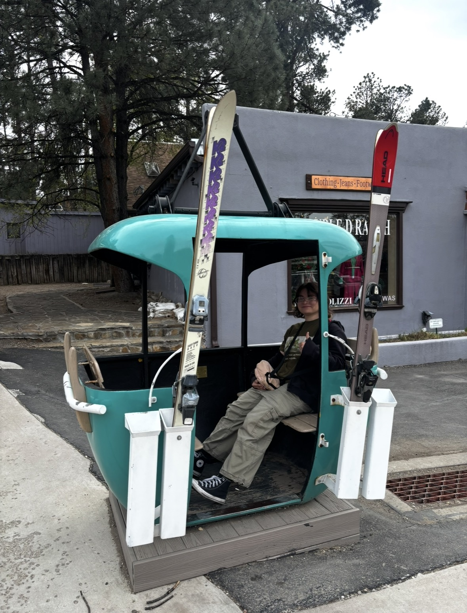

About
Background
I am a graduating Computer Science student at New Mexico State University with a concentration in software engineering. I am a part of multiple outreach orginizations with the goal of creating a greater community in Computer Science.
With YWiC, formerly Young Women in Computing, I work with elementary, middle, and high school students to introduce them to the world of technology and Computer Science in an effort to encourage them to major in Computer Science when they reach college age.
Through CAHSI, I have served as an Ally in the Allyship Program, were I was a mentor to freshman and sophomore students, providing guidance on industry, experience, scholarships, and school. As an Undergraduate Advocate, I promote different programs such as REUs, Industry Workshops, and Interview Prep workshops.
CodePath gave me the opprotunity to work as a Tech Fellow in Residence at New Mexico State University, which allowed me to be a Teaching Assistant to the Intro to Computer Science course. I hold office hours, labs, and assist with lectures for a class of 50 students.
What draws me to HCI
My interest in HCI took shape during my time at NMSU, beginning with my coursework in Human-Centered Computing. In the fall 2025, my team and I designed and built Voice Reminders, a mobile app in React Native that delivers task reminders through audio cues instead of text, reducing cognitive load for users who process information better by listening rather than reading. We tested the app with students and peers in our department, and their feedback influenced how the reminders were played. That project taught me that accessibility shapes every design decision from the beginning, it's not a feature to add at the end.
How software engineering connects
I want to study how interactive systems can adapt to the different ways people think and process information, so that technology is more accessible and equitable. I’m especially interested in designing interfaces that meet people where they are, and in building algorithms that are fair, transparent, and unbiased. Software engineering is how I explore these questions: building Voice Reminders showed me how much a working prototype can teach, and I want to keep combining user-centered research with hands-on engineering.
